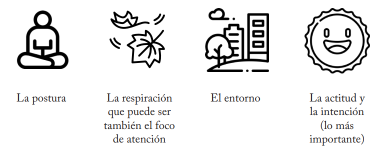
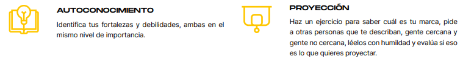
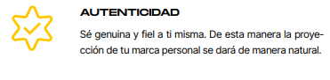
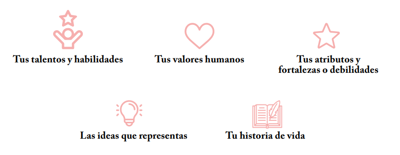

Para desarrollar la habilidad de liderazgo es importante que también desarrollemos la habilidad de desaprender al mismo tiempo que se aprende. Esto permite lograr un aprendizaje transformacional que nos permita no sólo adquirir nuevos conocimientos sino también estimular la modificación de tu forma de actuar.
Jon Kabat Zinn dice que sanar no necesariamente es “mejorar” la situación o el dolor, sino estar bien con lo que sea que esté pasando. Estar presentes nos ayuda a entender esta narrativa y que nos genera el continuo sufrimiento, de acuerdo al budismo, hay 6 causas principales de sufrimiento: los apegos, el control, no aceptar las cosas, el querer cambiar a los demás, querer cambiar el pasado y una baja autoestima.
Entonces, si practicamos la presencia, la atención a propósito será a través de ese aprendizaje de uno mismo, que iremos adquiriendo con la constancia, que nos permite recordar los buenas y perfectas que somos cuando quitamos todo eso negativo que creemos y nos decimos a nosotras mismas.
La vida es un constante sube y baja, giros, vueltas, situaciones agradables y desagradables, muchos emprendemos el camino de distintas prácticas con la idea de lograr “lograr encontrarnos a nosotros mismos”, sin embargo, tu verdadero ser ya esta en ti, quizás un poco enterrado, en condicionamientos tóxicos, después de todo, muchas de tus creencias pudieron originarse debido a opiniones de los demás, expectativas y tal vez conclusiones erróneas a las que llegaste de niño. Entonces, no se trata de “encontrarte”, sino de reconocerte, recordar, investigar y desenterrar tu verdadero ser en toda su presencia.
Los ejercicios de mindfulness pueden llegar a ser muy sencillos y rápidos aplicables en cualquier momento y hora del día sin necesidad de formalidades, sin embargo es importante tomar en cuenta que la práctica “formal” de la meditación es necesaria para poder realizar la práctica “informal” de mindfulness en el día a día. Si no logramos tener una práctica constante formal es muy complicado que podamos generar esas rutas neuronales necesarias para poder hacer uso de ese recurso cuando lo necesitemos. El mindfulness nos ayuda a ver las cosas simplemente por lo que son, quitándole la emoción negativa a todo lo que nos rodea, ejercitar tu cerebro constantemente genera nuevas rutas neuronales que nos apoya a anclarnos en el presente.

Si queremos equilibrar nuestra vida y permanecer en armonía es esencial que enfoquemos las diferentes partes de nuestra vida con una perspectiva coherente y congruente con nuestro presente y nuestro propósito y objetivos, entonces será mas fácil estar plenos, satisfechos y en paz.
El regresar a nosotros y estar presentes, cultivando esa relación mágica con la conciencia del momento presente, nos ayuda mucho a generar esa armonía que nos apoya a dejar de buscar felicidad como si fuera algo perdido, inalcanzable y nos ayuda a reconocer la satisfacción y el agradecimiento por lo que existe y lo positivo.
Debes de ser consciente de que tu marca está registrada desde que naces, y tu marca personal es tu trayectoria. Todo aquello que ha hecho que seas quien eres y que seas conocida o “desconocida” en el ámbito en el que te desenvuelves (Sáez, 2020).
Una marca personal es la combinación única de habilidades, talentos, valores, atributos y experiencias que te hacen ser tú, con un valor único, lo que te hace diferente a todas las demás personas. Tu marca personal también es la forma en la que los demás te perciben, tanto tu manera de actuar, como por tu forma de comunicarte e interactuar con ellos. Por lo tanto, es el punto en el que convergen la percepción que tú tienes de ti misma y la percepción que tienen los demás de ti.
Una persona decidida a desarrollar su marca personal tiene que explorar de forma consciente quién es y en qué tiene que trabajar para mejorar o desarrollar las áreas de oportunidad que necesita para consolidar su marca personal, es decir, cómo comunica lo que es y cómo es percibida por el mundo, todo esto como parte de su plan de vida y carrera, por lo que tenerlo o trabajar en el desarrollo de uno, solo te ayudará a enriquecer y cumplir con tus planes.
Tu marca personal es eso que te diferencia, aquello que nadie hace como tú, eso que los demás identifican, lo que te hace única.
 
En el proceso de construcción de la marca personal y en el de la elaboración de un plan de vida y carrera es necesario establecer las metas que quieres alcanzar, tanto para el plano personal como profesional.
Construir una marca profesional tiene sus desafíos específicos para las mujeres, muchas veces, al esforzarse por dar visibilidad a sus logros y proyectos, o tomar decisiones difíciles, se cae en estereotipos y se les asocia con calificativos como “mandonas”
Las normas de género indican que las mujeres “deben ser” cálidas, protectoras y agradables, y se penaliza a las mujeres calificándolas como “agresivas” o “ambiciosas”, cuando al genero opuesto se lo califica como alguien “seguro de sí mismo”, “fuerte” o “confiable”.
Lo que los demás van a hablar de ti va a estar basado en lo que proyectas, es ahí dónde radica la importancia de trabajar en eso que quieres que los demás identifiquen en ti.
Para poder elegir cuál es ese diferenciados, aquello por lo que quieres ser recordada, debes de considerar que sea algo que haces bien, debes especializarte en lo que sabes y en lo que eres buena. Si te encuentras en una posición de liderazgo tu misión es hacer equipos exitosos que saben hacer las cosas y así lograr el éxito colectivo.
Aún así, pedir ayuda es de las cosas más inteligentes que puedes hacer, no te hace menos, al contrario, no debes de perder de vista tus limites y poner los recursos donde son necesarios. Enfócate en lo que cada uno hace bien.

Gaby Fenton considera que anteriormente el sistema te obligaba a dejar se ser tú para poder lograr el éxito, la mayoría de las mujeres en posiciones de liderazgo debían comportarse como hombres, ya que el mundo esta hecho para ellos.
Considera que actualmente ya no está bien aceptar un liderazgo autoritario y aplaudirlo, debemos enfocar nuestros esfuerzos en desarrollar un liderazgo femenino, empático y abierto al dialogo.